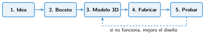
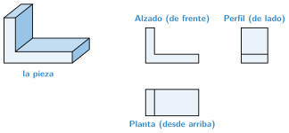

Del boceto al modelo
🤔 Pienso5 min
Qué hago aquí: Piensa un momento y contesta con lo que ya sabes. No pasa nada si no lo sabes: es para empezar.
Estos son tres dibujos de un objeto que hay en todas las casas. ¿Qué es?
📖 Leo y aprendo15 min
Qué hago aquí: Lee despacio, mira los dibujos y los ejemplos, y quédate con la idea clave del final.
Diseñar es pasar de una idea a un objeto. Se hace en cinco fases.

Un buen diseño empieza en papel, con un boceto: un dibujo a mano, rápido y claro.
Para que se entienda, dibujamos la pieza desde tres lados. Son las vistas.

Después, escribimos las medidas en el dibujo. Es acotar. En diseño 3D las medidas van siempre en milímetros.
✏️ Hago25 min
Qué hago aquí: Haz las actividades en orden. Empieza siempre por las básicas.
Escribe las cinco fases del diseño en orden.
Une cada vista con desde dónde se mira.
| Alzado | • • | desde arriba |
| Planta | • • | de lado |
| Perfil | • • | de frente |
Mide tu goma de borrar con la regla. Escribe su largo, su ancho y su alto en milímetros.
Dibuja el boceto de tu goma con sus medidas.
Dibuja el alzado, la planta y el perfil de una caja de cerillas abierta.
🚀 Amplío (si quieres saber más)
Qué hago aquí: ¿Has terminado? Lee la curiosidad o elige el reto. Es voluntario.
Mide un móvil. Dibuja el boceto acotado de un soporte para él.
✅ Compruebo5 min
Qué hago aquí: Contesta sin mirar la ficha y marca cómo lo llevas.